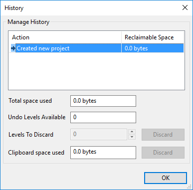
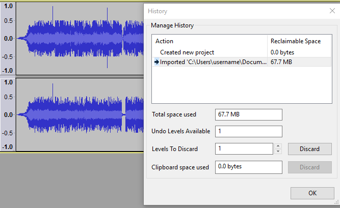
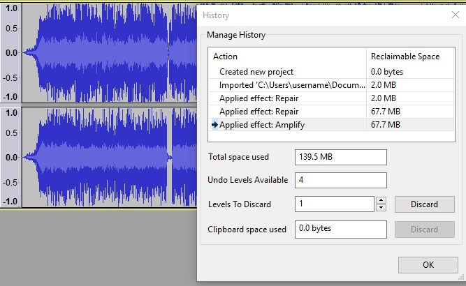
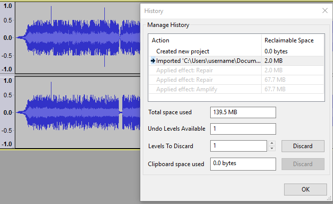
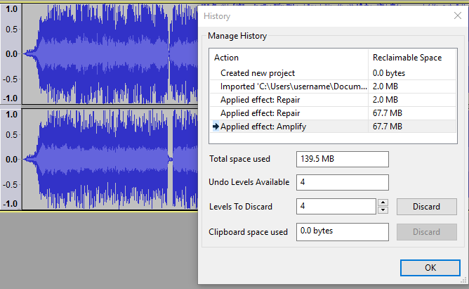
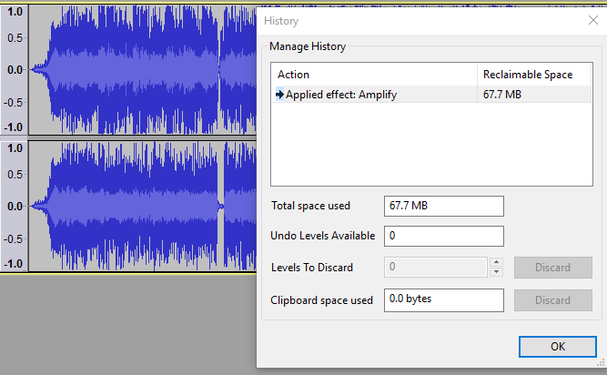

Undo, Redo and History

 Undo and Redo
Undo and Redo
Undo/Redo is fast, irrespective of how long the original action took. Use it to listen easily to "before" and "after" versions of your work.
As you apply more actions, the disk space needed to allow Undo/Redo of those actions grows, but the Undo/Redo space usage is discarded on closing the project. Undo/Redo steps for an open project can be managed in the History window.
There are four ways to Undo or Redo.
- The Undo and Redo choices at the top of Edit Menu
- Two buttons in the Edit Toolbar: Undo and Redo
- Select "History..." from the View Menu and click on an action to jump the project state to there
- Use the Keyboard shortcuts:
Windows Linux Mac Undo Ctrl+Z Ctrl+Z ⌘+Z Redo Ctrl+Y Ctrl+Shift+Z ⌘+Shift+Z
- Saving or exporting
- Changing the track height or the selection or cursor position (these are saved when you save a change that is recorded by Undo/Redo).
Undo is unlimited, back to the first action you took in the project. That means you can make a hundred changes, then change your mind and undo them all.
Undo is stepwise. This means that if you Undo to several steps back then perform a new action, you cannot then redo the old steps that followed the point you went back to. For example, suppose you made ten edits, numbered 1 through 10. Now you undo back to step 5, and then perform a new edit, which we'll call 6b because it's different from the original 6. At this point you can undo back to step 5 or all the way back to 1, but you can no longer get back to the original steps 6 through 10, which will be removed from the project history.
Undo History is stored for each project, while that project remains open. So saving a project does not erase your Undo History, but closing a project does erase it. When you reopen a saved project, it starts with an empty history.
History window
The History dialog lets you view and manage all of the actions you've taken since you opened a project. You can open it by selecting
- 
- History list: This has two columns.
- "Action" shows a list of all project states that you can go back or forwards to, earliest state first.
- "Reclaimable Space" shows for each action in the list the amount of disk space that will be released if you discard that action's Undo level.
To ensure that "Reclaimable Space" displays an accurate calculation of space that could be freed by discarding actions, space usage is always allocated to the latest step that uses that data. So if some steps were only applied to part of the project, then as each new action is applied, the action before will have its reclaimable space reduced.
Select an item in the history list to Undo or Redo immediately to that action. It's the same as choosing or multiple times, but quicker.
- Total space used: Displays the total disk space currently used by the project, which is the total of all the "Reclaimable Space" values shown in the history list.
- Undo Levels Available: (Uneditable). Displays how many actions are available to Undo. Select the next item down in the history list to increase the number of available undo levels by one. To choose the maximum possible number of Undo levels, select the bottom item in the list.
- Levels to Discard: Edit this text box to choose the number of Undo levels that will be discarded when you click the Discard button. Items are discarded starting from the top of the history list.
- Discard button: Removes the number of actions specified in the Levels to Discard box. This action is immediate and cannot be undone. Discarding undo levels will release the disk space taken by the discarded items and the value displayed in the "Total space used" box will accordingly reduce.
- Clipboard space used: Indicates the amount of disk space currently used by the Audacity Clipboard.
- Discard button: Empties the data on the Audacity Clipboard, releasing the disk space displayed in Clipboard space used and resetting that value to zero. This action is immediate and cannot be undone. After discard, pasting will do nothing.
- OK button: Accepts the changes made in the History window, if any, and closes the window.
- Undo (by any method) grays out steps starting from the bottom of the History list.
- When you Undo, you can still Redo to the grayed out list items (as shown in the third image in the example below) until you perform another editing action. After the new action, the grayed out steps will be removed from the list and replaced by the new action.
- Discard removes steps from the top of the History list. This action is immediate and cannot be Undone.
- Undo information is removed and the disk space it uses is released when you close an Audacity project. Thus you should only need to discard Undo levels if you are working on a very large project and are running short of disk space.
Example
In the image below we see the History window positioned beside a stereo track that has been imported into a project. The file size was 67.7 MB, and at the moment that amount of space is taken up on the drive by the ability to undo the import.
- 
In the next image the user has repaired two clicks and amplified the entire track. These edits have slightly more than doubled the space used by the project to 139.5 MB.
- 
We see here that the user could for example quickly undo the "Amplify" step and the two "Repair" steps, returning to the project to the state it was in immediately after the file was imported. This is equivalent to selecting three times. The project still uses 139.5 MB of disk space because it is still possible to Redo those actions.
Having now selected the "Imported" item to undo back to that stage, the project reflects that change - the amplification has been removed and the clicks are back.
- 
Instead of undoing back to the import of the audio file the user could decide that everything done up to this point is perfect. Therefore in order to save disk space the user could Discard unwanted Undo levels. In the image below the user has selected the "Amplify" item in order to make the maximum four Undo levels available, then set "Levels to Discard" to "4". Note that the effect on disk space would be the same if the user saved and closed the project, which would also discard all the Undo levels.
- 
After clicking the Discard button, four Undo levels are discarded starting from the top of the history list, so leaving the final "Amplify" item which was the last action applied. The total disk space used by the project has been reduced by the sum of the discarded items to 67.7 MB.
- 